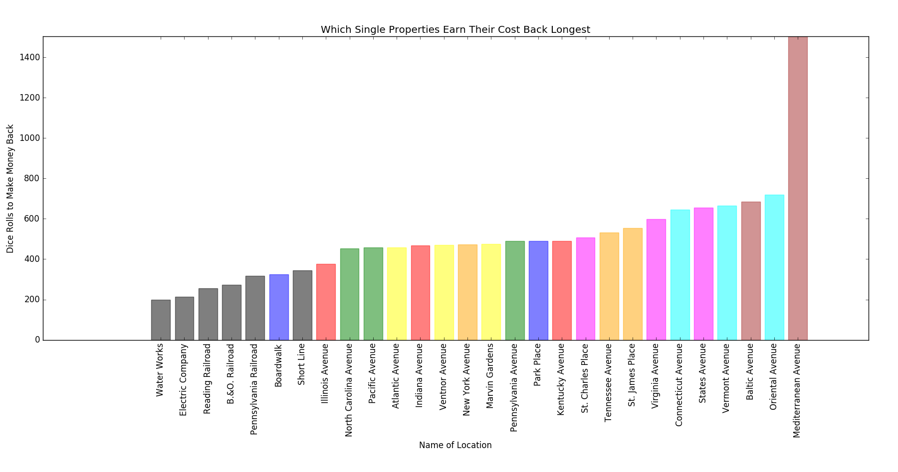

Introduction:
Some people believe that Park Place and Boardwalk are the best properties to build houses on
in Monopoly. Though the rent is obviously much higher than a lot of other properties, it is
not obvious to see if the decrease in probability to land on these squares is worth the
higher rent.
In addition, the game uses two dice rolls to move each turn, which follows a normal distribution
for probability to roll something between 2-12, as there is a 1/6 chance you can roll a 7.
Taking these ideas into account, we decided to see what the best strategy for Monopoly is.
What we did:
Analyzed the value of properties in Monopoly by simulating a game.
We took 1,000,000 turns and found out which spaces were landed on
the most, which ones raked in the most money, etc. Our results
are visualized below.
Notable Trends/Observations:
- Jail is by far the most common square to land on because there are Chance and Community Chest cards, the "Go to Jail" square, and rolling three doubles in a row puts you in Jail.
- All the properties 1-2 rolls after the Jail Cell are very popular. Illinois Ave. is the most popular property. The properties after "Go to Jail" are uncommon to land on because the players can jump past that section of the board due to Chance and Community Chest Cards and "Go to Jail".
- Some of the most uncommonly landed on properties in the game are Mediterranean Ave., Baltic Ave., and Park Place.
- There are certain properties that may seem like "peaks" or outliers (ex: St. Charles Place, Illinois Ave., Boardwalk, Railroads and Utilities). The reason for that is because there are Chance and Community Chest cards that can advance you to these locations. This is our main rationale for wanting to implement these cards and not ignore them.

Notable Trends/Observations:
- Mediterranean Ave. is by far the worst. The property takes 30 instances of people landing on it in order to pay its cost back through its basic rent, and on top of that, it is one of the most uncommonly landed on squares in the game.
- The Railroads and Utilities are good for quick money. Their rents can jump up to the highest out of all the rents in the game. However, because you cannot build houses on these properties, they are only good for early game if you can hold multiple of each.
- Illinois Ave. and Boardwalk make their money back the quickest through rent. Illinois Ave. is the second most popular square on the board (behind Jail Cell), and Boardwalk has a high rent in comparison to its buy cost.
- The formula we used to calculate rolls needed: Number_of_turns_to_break_even = (Cost)/(Rent*Probability_to_land_on_it)
Notable Trends/Observations:
- The graph shows five different situations. The first set of all the board colors represent the number of rolls it takes to pay back all costs of the property with one house on it. The second set displays the number of rolls assuming there are two houses, etc.
- The addition of the third house is more efficient as opposed to building one house or two houses on all the properties.
- The addition of the fourth house and the eventual building of the hotel don't actually decrease the number of rolls it takes to break even. What it does change is the player's ability to bankrupt others. However, it is also risky because you will most likely be digging yourself out of the financial costs that the building costs.